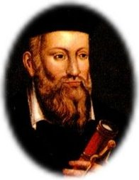

| Maître
Suprême Ching Hai |
| Une brève
biographie du Maître Suprême Ching Hai Diverses conférences données par Maître Suprême Ching Hai |
| Végétarisme |
| Les bienfaits
d'un régime
végétarien Ce que vous devez savoir à propos de la viande Mode de vie alternatif Dix raisons de manger davantage végétarien Des scientifiques et lauréats de prix Nobel végétariens Versions: html, pdf Bonnes nouvelles pour les végétariens |
| Questions et réponses |
| Les
questions fréquentes sur la Méthode Quan Yin Bureau d'information spirituelle |
| Exercices Quan Yin |
Visionner des exercices expliqués par Maître en personne |
| Les sites Quan Yin sur la Toile |
| Les sites Internet
Quan Yin |
| Services |
| La
revue n'est plus traduite en français à l'heure
actuelle (merci de nous écrire pour toute
demande) La parole du jour n'est plus envoyée &agrace; l'heure actuelle. |
| Comment nous contacter |
| Nos
correspondants à travers le
monde |
| Rechercher sur le site |
| Recherche
par mots
clés |
|
|
|
|
|
Une téléconférence du 14 avril 2013 |
|
À la lumière des événements mondiaux urgents,
le Maître Suprême Ching Hai a fait part de
messages éclairés lors d'une téléconférence le
14 avril 2013. Suite Ajouté le 1er mai 2013 |
|
|
|

Dans son célèbre recueil en quatrains Les Prophéties, Michel de Nostredame, voyant français du 16e siècle, prédit l’apparition de nombreux grands événements mondiaux. Les experts qui ont étudié les poèmes disent que Nostradamus a prédit le Grand Incendie de Londres, la Révolution française, la Seconde Guerre mondiale et la tragédie du 11 septembre 2001 aux États-Unis. Alors que le monde s’approche rapidement de l’ère du Verseau, du 21 décembre 2012 et du changement de baktun (cycle) dans le calendrier maya, les écrits de Nostradamus font l’objet d’une attention particulière. Suite Téléchargez au format pdf. Ajouté le 5 mars 2013 |
|
|
|
Le 11 Avril 2012, une lettre
ouverte de Maître Surprême Ching Hai est adressée
aux dirigeants et médias: Vos efforts continus ont permis à la vie de notre précieuse planète d'être prolongée d'un demi-siècle, et cette continuation va s'amplifier Suite Téléchargez au format pdf en français et en plusieurs langues. Ajouté le 21 avril 2012 |
|
|
|
Visiter le site Celestial Jewlery (en anglais) Ajouté le 15 mars 2008 |
|
|
||
Suite (disponible en 22 langues) Ajouté le 13 septembre 2007 |
|
par Maître Suprême Ching Hai et Son Association |
|
Le
reportage "La
liste des activités de secours
humanitaires de Maître Suprême Ching Hai et
Son
Association" n'est pas complète, bien
que nous ayons fait de
notre mieux pour la compléter. Les activités n'ont
pas
été suivies officiellement avant 1989, et Elle a
commencé à enseigner à Formose en 1984. Maître Suprême Ching Hai apporte, à des milliers de gens du monde entier, Son amour et Son aide, au-delà des frontières de races et de cultures, Se tournant vers ceux qui sont dans la misère, les sans-abri, les instituts de recherche médicale sur le cancer et le sida, les vétérans de guerre des États-Unis, les personnes âgées en difficulté, les handicapés physiques et mentaux, les réfugiés, les victimes de tremblements de terre, d'inondations et d'incendies. Suite(anglais) |
|
|
||
Trouvez le Ciel en vous et le Ciel sera partout Sujet d'actualité Une vérité qui dérange : le réchauffement de la planète, l'environnement et l'alimentation végétarienne Maître dit La clé du progrès spirituel Changements positifs sur la planète Des nouvelles positives pour un monde meilleur Un monde d'amour Protection Mondiale des Animaux de Ferme Téléchargez la version PDF |
|
|
||
Tournez-vous vers votre sagesse intérieure pour obtenir de vraies réponses Maître dit Créez le Ciel permanent pour nous-mêmes et les générations à venir Série du brillant leadership mondial Bhoutan: Pour le bonheur de son peuple / Singapour: Singapour et ses actions / Pays-bas: Un pays européen champion de la lutte contre la pauvreté Gens merveilleux et événements merveilleux Partager les richesses / Le maire de New York fait un don à une cause mondiale / La charité qui donne une chance aux poulets / L'appel d'une scientifique renommée pour que chacun fasse le choix d'une bonne alimentation/ Aider les oubliés à trouver un Jardin d'Eden / Une alternative aux tests sur les animaux / « Qui sommes-nous si nous ne sommes pas utiles aux autres ? » Technologies de l'Age d'Or L'énergie gratuite illimitée se développe Téléchargez la version PDF |

|
|
||
Jaune : Les peuples à la peau jaune Rouge : Les peuples à la peau rouge Noir : Les peuples à la peau noire Blanc : Les peuples à la peau blanche Vert : La nature, les animaux,les oiseaux, etc. Bleu : L’eau et les êtres aquatiques La forme : La Terre Le fond : Le ciel Suite |
|
|
||
Appréciez l'opportunité précieuse d'acquérir la réussite spirituelle / Nous sommes vraiment les enfants de Dieu Reportages spéciaux « Le chercheur de paix » reçoit la statuette d'argent lors de la 27ème édition des Telly Awards Ere végétarienne Suivre la voie de l'amour de Dieu à travers le végétarisme / Une beauté végétarienne inspire de plus profondes valeurs / L'alimentation végétalienne est efficace pour traiter le diabète de type 2 Le Maître raconte des histoires A niveaux différents, perceptions différentes Téléchargez la version PDF |
|
Une nouvelle chaîne satellite prochainement sur vos écrans |
||||
|
|
|
||
Ses oeuvres d'art dépeignent la beauté intérieure et extérieure des cultures et des peuples qu'Elle a côtoyés. Visiter une galerie des Ses toiles |
|
|
||
Suite |
|
|
|
Que peuvent faire
les êtres humains face aux maladies
épidémiques qui se multiplient ?
Pour répondre &agrace; cette question
et sauver la vie d'innombrables animaux,
Maître a personnellement
élaboré un prospectus intitulé "Mode
de vie alternatif" concis comprenant
des illustrations colorées.
Ce document fournit une information de base
sur les alternatives &agrace;
l'alimentation carnée. Vous êtes invités
&agrace; partager, reproduire,
imprimer ou afficher un lien Internet vers ce
prospectus |
|
www.thecelestialshop.com |
||
|
|
Dieu prend soin de tout |
||
Les paraboles plaisantes et élevées du livre encouragent les jeunes à développer pleinement leur potentiel mental, créatif et personnel en transportant des vérités nobles dans un format facile à comprendre. Dans la société technologique complexe d'aujourd'hui, ce précieux livre offre de la nourriture pour le mental et l'âme des enfants de manière détentendue et agréable par l'humour et la sagesse de Maître Suprême Ching Hai. Suite |
|
L'Afrique: l'arrière-cour de Dieu |
||
|
|
|
|
|

|
une émission en ligne 24h/24 sous-titrée en français |
|
Le programme d'art et de
spiritualité Un voyage à
travers les royaumes esthétiques en
anglais et en chinois est
maintenant sous-titré en plusieurs langues
dont le
français. Pour visualiser les vidéos, vous
aurez besoin d'Internet
Explorer et de
windows
media player
. |
|
|
|
Maître envoie Ses voeux à
chacun d'entre nous: «
Bonne et heureuse année chinoise et aulacienne
» |
|
|
|
Dans cette conférence
vidéo diffusée sur Internet
pour célébrer le nouvel an 3 de l'âge d'or,
Maître partage Ses meilleurs voeux avec chacun
d'entre nous. |
|
|
|
Maître envoie Ses
meilleurs voeux à
tous, joyeux Noël et bonne année. |
|
|
|
Pour contribuer à la préservation des ressources naturelles de notre planète, de nombreux grands penseurs et scientifiques du monde à travers l'histoire ont observé une alimentation végétarienne et ont affirmé sa nécessité d'un point de vue à la fois moral et logique. Ci-dessous figure une courte liste de ces nobles individus. Suite (Ajouté le 8 décembre 2005) Télécharger la version pdf |
|
|
|
Depuis sa
télédiffusion en mai 2001, le programme
télévisé de Maître Suprême
Ching Hai Un voyage à travers les
royaumes esthétiques a été
acclamé par le public, et à partir
d'octobre 2005, le programme
sera télédiffusé sur quatre chaînes
satellites ETTV à Formose et
l'étranger pour que plus de
téléspectateurs puissent regarder le
programme. |
|
|
|
Ajouté le 18 juin 2005 |
Très chère
Maître, |
|
|
|
Pour élever notre esprit
et apporter l'inspiration
dans notre vie quotidienne, de nombreux
livres de Maître Suprême
Ching Hai ont été traduits en de nombreuses
langues. Les
publications sont disponibles dans les
différents Centres ou au
Centre principal à Formose (P.O.Box 9,
Hsihu, Miaoli, Formosa,
R.O.C.).Une collection de conférences de
Maître est aussi
disponible sur cassettes audio et vidéo
ainsi que des photos de
toutes tailles. La revue de Maître Suprême
Ching Hai, autre source
inestimable d'informations actuelles et
d'inspirations, est
disponible en plus de dix langues : anglais,
chinois, thaï,
français, allemand, espagnol, coréen,
portugais, indonésien,
japonais et aulacien. |
|
|
|
|
|
|
l'art suprême vers de nouveaux sommets |
|
Créatrice
: Maître
Suprême Ching Hai
Maître à récemment conçu douze nouvelles Lampes de Longévité qui sont d'une élégance suprême. Elles sont faites à partir de bambous parfaits. Chaque morceau étant différent en taille, forme et texture, chaque lampe est faite de façon artisanale pour mettre en avant toutes les caractéristiques du matériau. Maître à donné des instructions spéciales pour que l'apparence initiale du bambou soit conservé pendant le processus de fabrication. Chaque lampe constitue donc une oeuvre d'art unique. Les douze lampes sont dotées d'ampoules économiques en énergie ou de LED pour qu'elles puissent briller de toute leur forme merveilleuse. Et naturellement, Maître donne une signification spéciale et un amour infini à chaque lampe, lorsque celle-ci brille. Suite |

{kind=link}